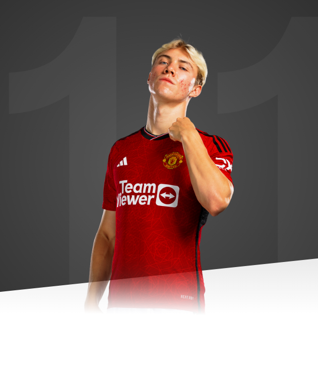

I want to bleed for this jersey, and I want to win some trophies. That’s why I came here.

AGE
20
APPEARANCES
8
CLEAN SHEETS
3
BIOGRAPHY
Denmark forward Rasmus Hojlund has had a meteoric rise at club and international level since making his professional debut at the age of 17.
Rasmus played academy football for Horsholm-Usserod Idraetsforening and Brondby, before eventually landing at his hometown club, FC Copenhagen, where he began to make an impact. He broke into the first team in October 2020 and finished his first season with a handful of senior appearances including four in Denmark's Superligaen.
Hojlund went on to play 32 times for FC Copenhagen, scoring five goals - two of these coming in the Europa Conference League. He also collected his first winner's medal after helping Jess Thorup's side to claim the 2021/22 Superligaen title.
By that time, he'd already moved on to Austria, with Sturm Graz securing the striker's services on 28 January 2022. He impressed with his new club, scoring 12 goals in 21 appearances - including one in a UEFA Champions League qualifying defeat to Dynamo Kyiv.
The Dane's exploits in Austria attracted other European clubs and on 27 August 2022, Hojlund signed for Serie A side Atalanta on a five-year contract. During his time in Italy, he became known for his tall frame and electric pace, with some pundits comparing him to his fellow Scandinavian, Erling Haaland.
In his 34 outings for Atalanta, he netted 10 goals - many of them as an impact sub - and registered four assists. Rasmus's maiden strike for the Bergamo club came on 5 September 2022 in a 2-0 win over Monza. In January 2023, he scored four goals in four consecutive fixtures, as he nailed down a regular place in the starting line-up.
Having made his debut for Denmark as a substitute against Croatia in September 2022, Hojlund started a senior international match for the first time on 23 March 2023. The 20-year-old marked the occasion by scoring a hat-trick - his first three goals for his country - as the Danes beat Finland 3-1 in UEFA Euro 2024 qualifying.
Rasmus followed that triple with a further two strikes against Kazakhstan three days later. When he joined United on 5 August 2023, Hojlund had six senior caps on his CV, including a game earlier in the summer when he played directly against Jonny Evans as Denmark triumphed 1-0 over Northern Ireland in Copenhagen. Another Red, Christian Eriksen, was also on duty for the home side.